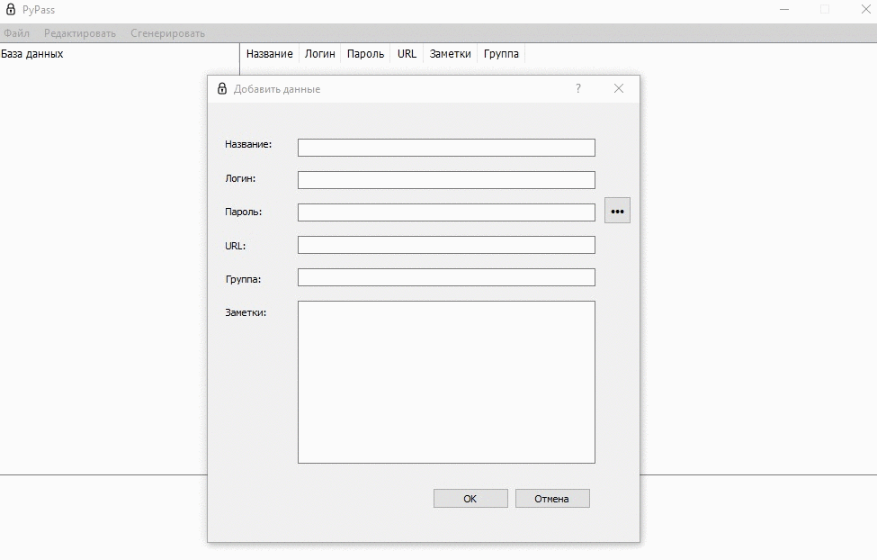
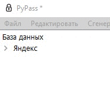

PyPass (Python Password) - программа для хранения паролей, написанная на языке Python, с использованием PyQt5
При создании программы были использованы библиотеки:
1) Меню "Файл"
Используется для создания базы данных паролей
Используется для открытия базы данных паролей
Используется для сохранения изменений открытой базы данных паролей
Используется для выхода из программы
2) Меню "Редактировать"
Используется для создания базы данных паролей
Используется для редактирования базы данных паролей напрямую, в виде .json файла (для владеющих навыками программирования)
3) Меню "Cгенерировать"
Используется для создания уникального сгенерированного пароля
Чтобы добавить пароль:
Редактировать => Добавить данные
Если вы видите (PyPass * ), это обозначает, то что ваша база данных паролей не сохранена.
